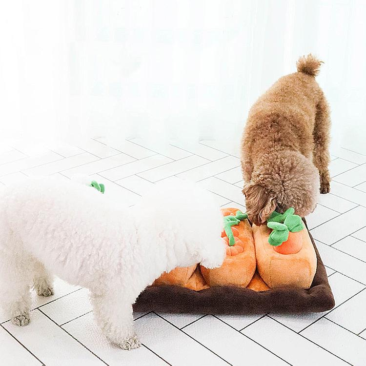
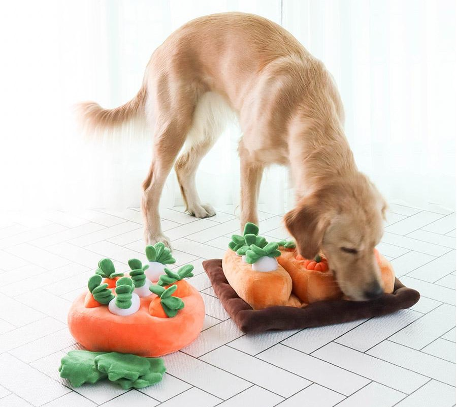
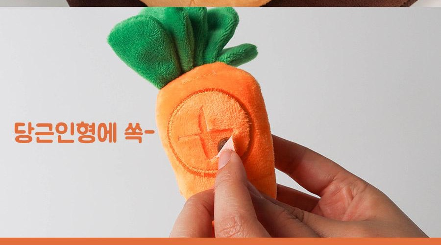
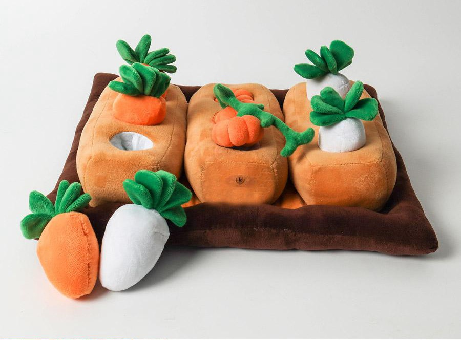
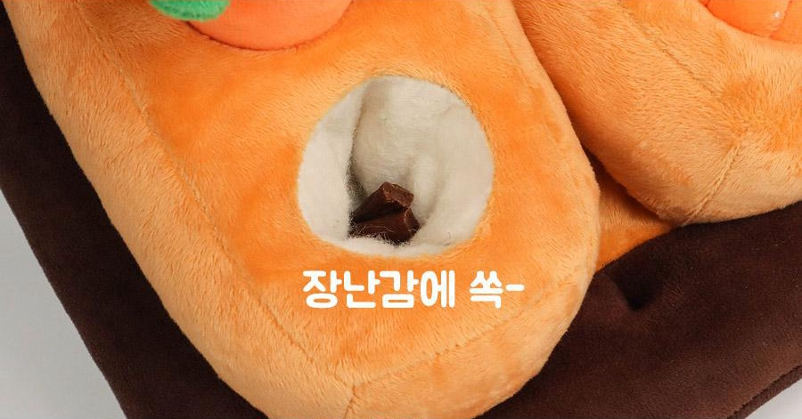
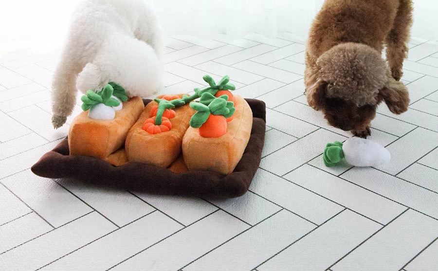
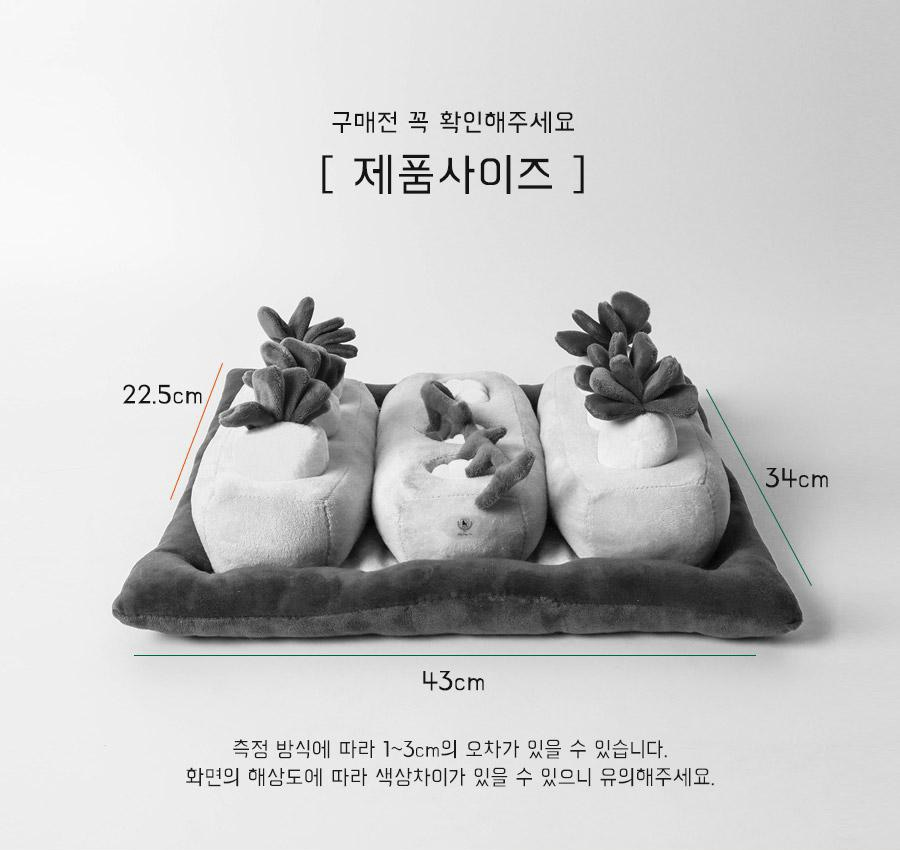
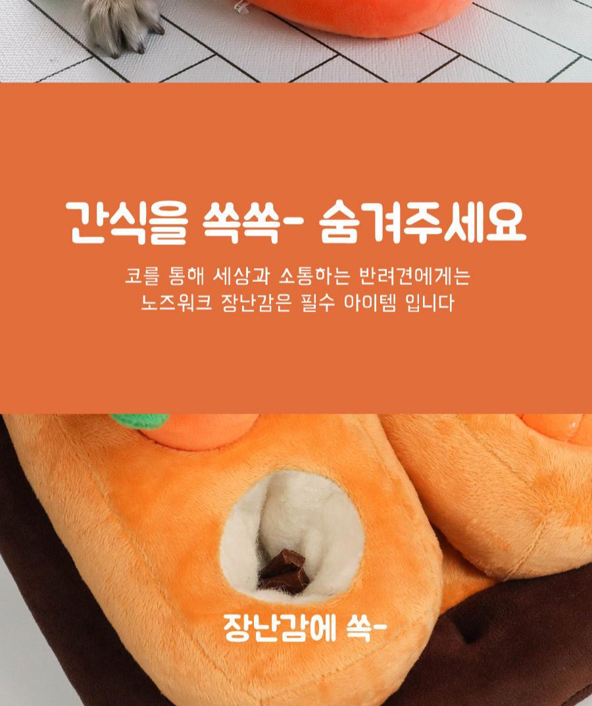

바닥에 뿌린 사료
한곳에 모인 사료는 몇 번 킁킁하면 끝나요. 아이는 곧 다시 보호자를 찾아요.
회의 시작 10분 전, 발밑에서 또 낑낑대나요?

당근을 뽑은 자리에 숨은 간식을 코로 찾아내는 노즈워크 장난감이에요. 회의 전에 간식을 숨겨 두고, 아이가 스스로 찾는 시간을 만들어 주세요.
간식은 어디에, 어떻게 숨길까요? 사용법 3단계 보기 ↓회의 링크를 누르기 직전, 발등을 긁는 앞발과 작은 낑낑 소리. 사료 몇 알을 던져 주면 잠깐 조용해지지만, 금세 다 먹고 다시 나를 올려다봐요.
자료를 띄우려는데 앞발로 다리를 툭툭 건드려요.
바닥에 흩어 준 사료는 몇 번 킁킁하면 끝나요.
카메라를 켜면서도 발밑에서 소리가 날까 신경이 쓰여요.
아이에게 필요한 건 ‘가만히 있기’가 아니라, 몰두할 거리일지도 몰라요.
사료를 바닥에 뿌리는 대신, 당근밭 구멍마다 나눠 숨겨 주세요. 아이는 당근을 하나씩 뽑으며 냄새로 간식을 찾아요.
한곳에 모인 사료는 몇 번 킁킁하면 끝나요. 아이는 곧 다시 보호자를 찾아요.

간식이 구멍마다 흩어져 있어, 당근을 하나 뽑고 또 다음 당근을 찾아요.
당근을 뽑은 자리에 간식을 넣어요. 숨긴 곳이 여러 군데라 한 번에 끝나지 않아요.

간식 포켓이 있는 당근이라면 인형 안쪽에도 간식을 넣을 수 있어요. 포켓 유무는 아래 FAQ에서 확인해 주세요
처음엔 살짝 걸치듯, 익숙해지면 깊숙이 꽂아 주세요. 아이에게 맞춰 찾는 재미를 조절할 수 있어요.

밭에 꽂힌 당근·무 인형을 뽑아 주세요. 뽑은 자리에 구멍이 생겨요.

구멍 안쪽에 작은 간식이나 사료를 넣어요. 여러 구멍에 조금씩 나눠 넣는 게 좋아요.

인형을 다시 꽂고 아이 앞에 놓아 주세요. 처음엔 살짝만 꽂아 쉽게 찾게 해 주세요.
회의 전에 미리 숨겨 두면, 아이가 찾는 동안 마지막 준비를 할 수 있어요.
딩동펫 당근밭을 사용한 보호자들이 블로그에 남긴 후기 중 일부예요.
“이 밭 하나로 10-15분이상 가지고 노는 모습을 볼 수 있어요”
“다른 장난감은 초스피드로 빨리 찾아서 먹는데 이건 5~10분 정도 가지고 놀더라구요”
개인 후기이며, 놀이 시간은 아이의 성향과 숨긴 간식의 양에 따라 달라요.

‘당근밭’ 디자인 기준 약 가로 43cm × 세로 34cm예요. (측정 방식에 따라 1~3cm 차이가 있을 수 있어요)
당근·무 인형을 뽑은 자리의 구멍에 간식을 숨기는 방식이에요.
부드러운 봉제 원단으로 만든 매트와 인형이에요.
A. ‘당근밭’ 디자인은 약 가로 43cm × 세로 34cm예요. 측정 방식에 따라 1~3cm 차이가 있을 수 있어요.
같은 시리즈에 모양과 크기가 다른 디자인도 있으니, 구매
페이지에서 ‘당근밭’ 디자인을 선택했는지 꼭 확인해 주세요.
A. 판매 페이지 안내에 따르면, 당근 인형의 간식 포켓은 리뉴얼 전·후 제품이 랜덤으로 발송돼요. 포켓이 없는 인형을 받더라도, 밭 구멍에 간식을 숨기는 기본 놀이는 똑같이 할 수 있어요.

A. 씹는 장난감이 아니에요. 이갈이 중이거나 물어뜯기를 좋아하는 아이라면 보호자가 곁에서 지켜봐 주시고, 놀이가 끝나면 정리해 주세요. 원단이 뜯어졌다면 바로 사용을 멈춰 주세요.
사료를 뿌려 주는 대신 구멍마다 간식을 나눠 숨기면, 아이는 당근을 하나씩 뽑으며 찾아요.
쿠팡에서 확인할 것: ‘당근밭’ 디자인 선택, 실시간 가격과 배송, 당근 포켓 랜덤 발송 안내
가격과 배송 조건은 쿠팡에서 바뀔 수 있어요. 직접 확인한 뒤 결정하세요.
이 포스팅은 쿠팡 파트너스 활동의 일환으로, 이에 따른 일정액의 수수료를 제공받습니다.